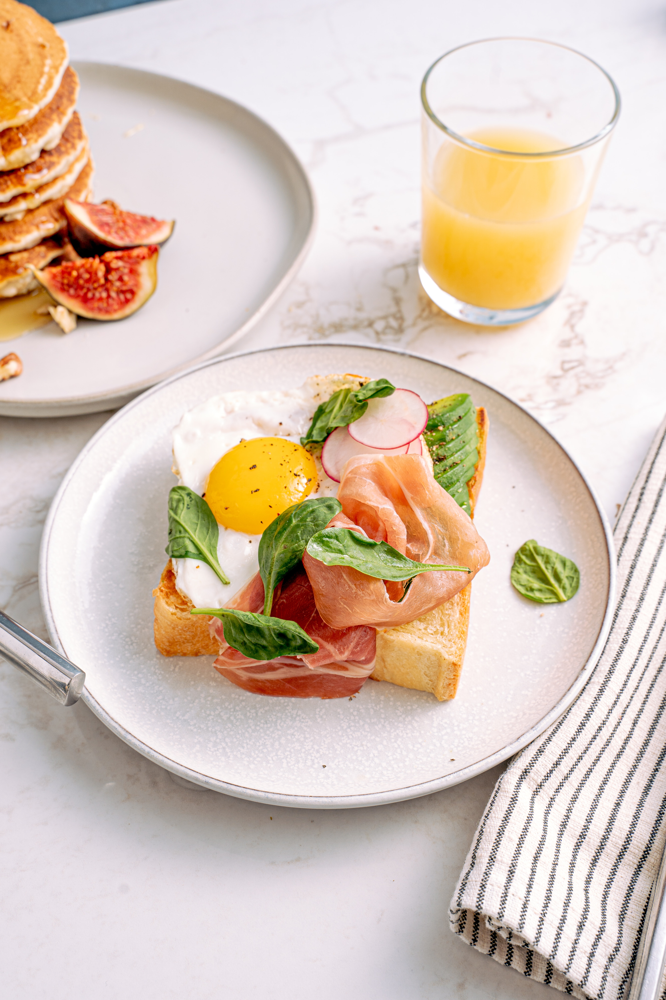
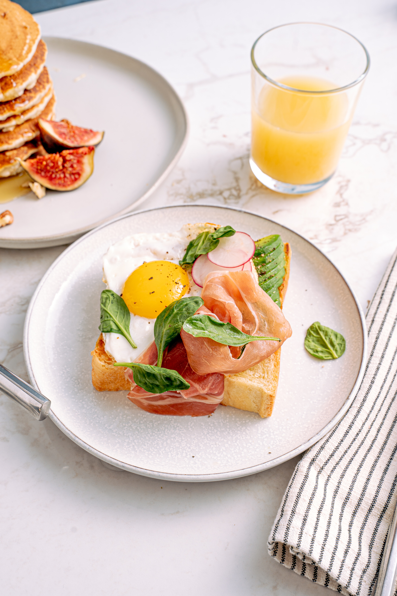

PLAN DESCENSO SALUDABLE


Perder peso de manera saludable implica adoptar un enfoque equilibrado que combine una alimentación adecuada, ejercicio regular y cambios de estilo de vida sostenibles. Aquí tienes un plan de descenso de peso saludable:
- Ensalada de pollo a la parrilla acompañado de quinoa y vegetales al vapor
- Salmón a la parrilla con brocoli al vapor y puré de batata
- Ensalada de pollo con ensalada de garbanzos y quinoa
- Pescado a la parrilla con sopa de lentejas y espárragos al horno.
Opción 1
Opción 2
PLAN INFANTIL


Un plan de dieta infantil debe ser equilibrado y proporcionar todos los nutrientes esenciales para el crecimiento y desarrollo saludable de los niños.
- Sándwich de pavo o pollo con verduras en pan integral. Zanahorias baby o pepinos con hummus. Yogur bajo en grasa o un pequeño trozo de queso. Una naranja o fresas.
- Pollo a la parrilla o al horno. Arroz integral o quinua. Brócoli al vapor o guisantes. Una manzana o pera de postre.
Opción 1
Opción 2
PLAN VEGETARIANO


Una dieta vegetariana bien equilibrada puede ser muy saludable, siempre y cuando se planifique adecuadamente para asegurarse de obtener todos los nutrientes necesarios.
- Ensalada de garbanzos: garbanzos cocidos, pepino, tomate, pimiento, cebolla roja y perejil, aderezado con vinagreta de aceite de oliva y limón. Una porción de quinua o arroz integral.
- Sopa de lentejas o sopa de verduras (preparada con ingredientes frescos y bajos en sodio). Tofu a la parrilla o tempeh con una salsa de cacahuetes y verduras salteadas. Una porción de quinua o arroz integral.
Opción 1
Opción 2
PLAN LIGHT
 

Una dieta "light" generalmente se refiere a una dieta baja en calorías o diseñada para la pérdida de peso. A continuación, te proporciono un ejemplo de un plan de dieta baja en calorías.
- Ensalada de atún: atún enlatado en agua, mezclado con judías verdes, pimiento rojo, cebolla morada y una vinagreta de aceite de oliva y limón. Una porción pequeña de arroz integral o cuscús integral.
- Pechuga de pollo a la parrilla o tofu a la parrilla (si prefieres una opción vegetariana). Espárragos al vapor con un toque de aceite de oliva y ajo. Ensalada de espinacas con champiñones, tomate y aderezo ligero.